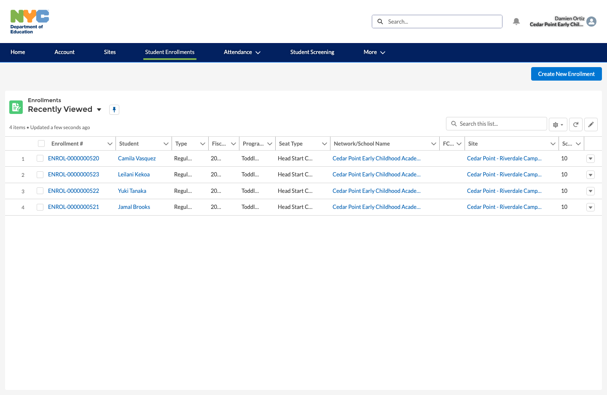
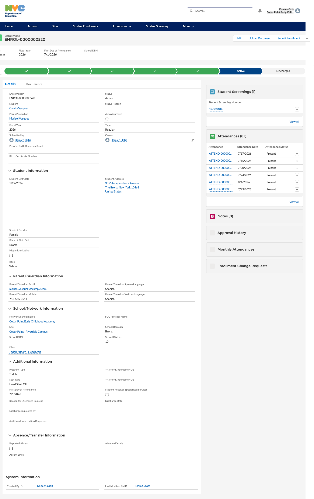
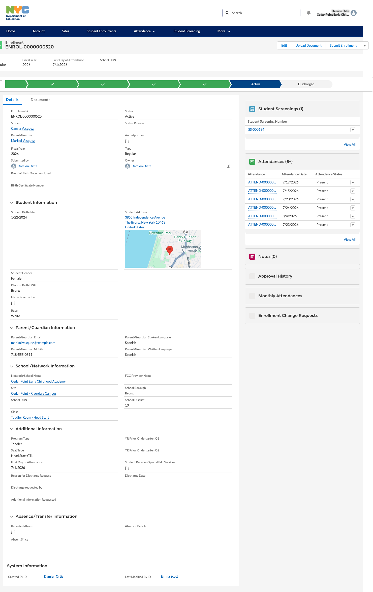
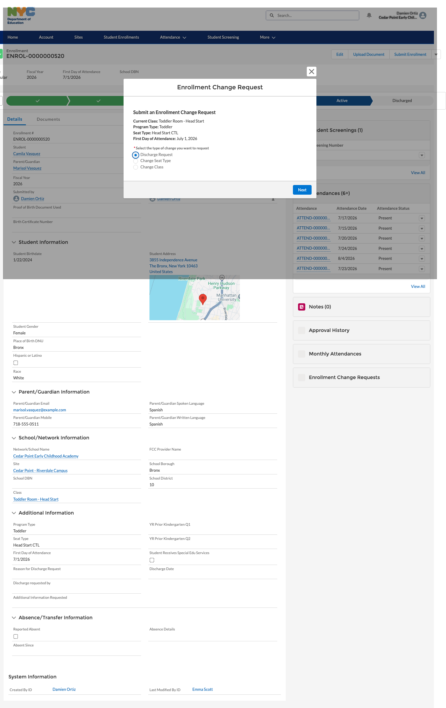
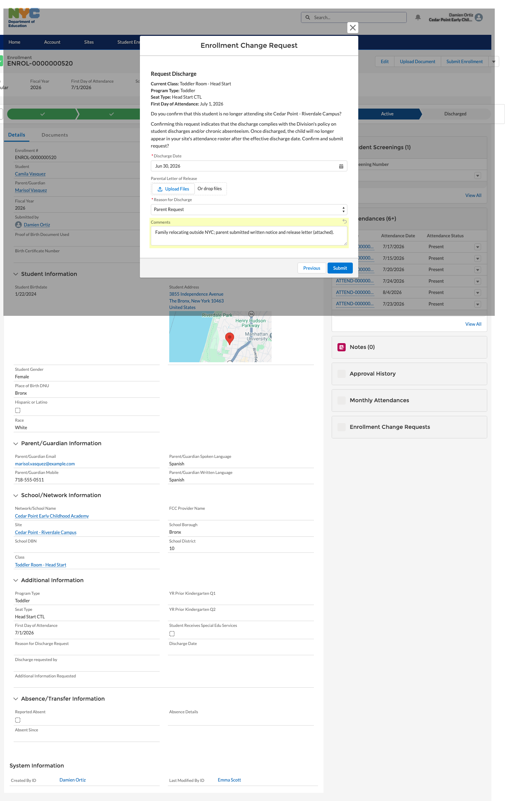
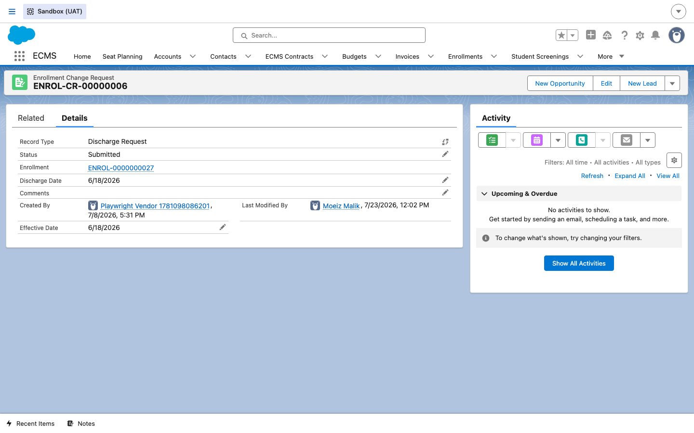
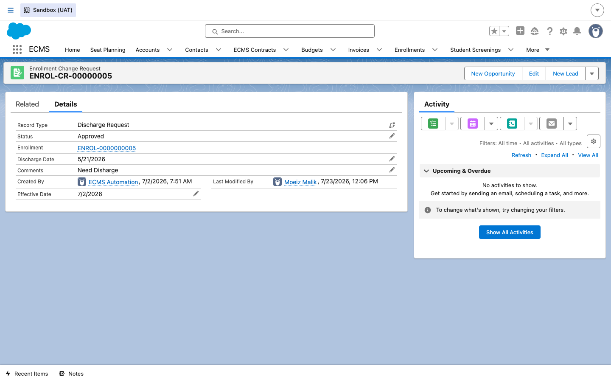
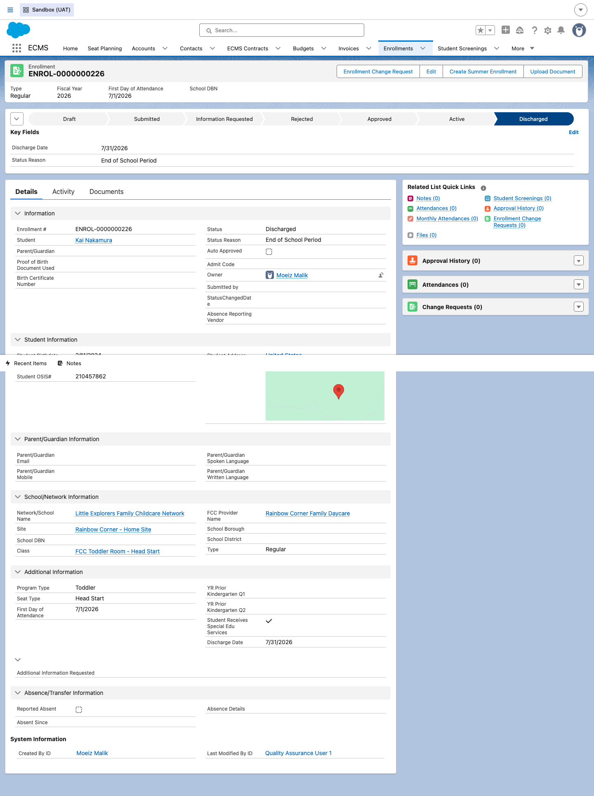

Discharges
How a CBO/FCCN vendor formally ends a currently-enrolled child's placement — aging out, moving away, or a family deciding to stop — and how DOE reviews and approves that request so the enrollment moves to its final Discharged status.
Overview
A discharge is the formalized version of "this child is leaving the program." It's initiated by the CBO/FCCN — usually the Enrollment Manager — from the child's active Enrollment record, for reasons like the child aging out of the program, the family moving away, or a parent simply deciding to stop. As the onboarding overview puts it: a discharge "requires supporting paperwork (like a parental release letter), has date-validation rules (e.g., it has to line up with the school calendar), and — importantly — it updates attendance and enrollment records and notifies the outside systems that track this child... so everything stays in sync." A DOE Enrollment Specialist reviews and approves the request before the enrollment's status bar finally advances to Discharged.
Steps
1Open the enrollment to discharge
DO In the vendor portal, go to Student Enrollments and locate the child whose placement is ending. This example uses Camila Vasquez, an actively enrolled child at Cedar Point – Riverdale Campus.
RESULT The Enrollments list shows every child currently enrolled at the sites this vendor user has access to, each linked through to its enrollment record.

2Review the active enrollment
DO Click into the enrollment record. Confirm it's the right child and that its lifecycle status bar currently shows Active — only an active (or approved) enrollment can be discharged.
RESULT The enrollment detail page loads with its full lifecycle status bar, student and parent/guardian information, and related lists for attendance, approval history, and enrollment change requests.

3Start an Enrollment Change Request
DO Click Show more actions on the enrollment, then choose Enrollment Change Request from the dropdown.
RESULT An "Enrollment Change Request" wizard opens as a modal, ready to select what kind of change is being requested.

4Choose "Discharge Request"
DO On the first wizard screen, select Discharge Request from the three change types offered (the others being Change Seat Type and Change Class), then click Next.
RESULT The wizard advances to the discharge-specific details screen, carrying forward the enrollment's current class, program type, seat type, and first day of attendance for context.

5Complete the discharge details
DO Confirm the child is no longer attending the site, then fill in the required Discharge Date, upload the Parental Letter of Release under Upload Files, choose a Reason for Discharge (e.g. Parent Request), and add any Comments. Do not click Submit unless you intend to actually file the request.
RESULT The form confirms the discharge complies with the Division's policy on student discharges and chronic absenteeism, and warns that once discharged, the child will no longer appear on the site's attendance roster after the effective discharge date.

6DOE reviews the submitted request
DO Once the vendor submits, the request lands with a DOE Enrollment Specialist for review. Internally, they open the Enrollment Change Request record to check its Status, linked Enrollment, Discharge Date, and Comments.
RESULT The Discharge Request record shows Status: Submitted, awaiting DOE action, linked back to its Enrollment.

7DOE approves the discharge
DO After confirming the paperwork and dates are in order, the DOE Enrollment Specialist approves the request.
RESULT The Discharge Request record's Status moves to Approved — a fully processed, closed-out example of the same record type.

8Confirm the enrollment is Discharged
DO Once approved, open the underlying Enrollment record and check its lifecycle status bar and Key Fields.
RESULT The status bar now shows Discharged as the current stage, with the Discharge Date and Status Reason populated in Key Fields.

This closes out the enrollment lifecycle for this child. If the family re-enrolls at a later date, a brand-new Enrollment record is created rather than reopening this one.